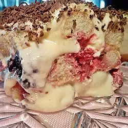

Raspberry Tiramisu

What is this dish?
A twist on an Italian favorite. Ladyfingers are layered in a dish with raspberries and mascarpone filling.
Ingredients:
- 1 pound fresh or frozen raspberries
- 6 tablespoons white sugar
- 1 cup white sugar
- ⅓ cup hot water
- ¼ cup brandy-based orange liqueur (such as Grand Marnier®)
- ½ cup cold water
- 4 egg yolks
- 6 tablespoons white sugar
- 1 pound mascarpone cheese
- 4 egg whites
- 6 tablespoons white sugar
- ½ teaspoon vanilla extract
- 12 ounces ladyfingers
- 4 ounces grated semisweet chocolate
- 3 tablespoons sliced almonds, toasted
Steps:
- In a medium bowl, combine raspberries with 6 tablespoons sugar. Crush a few of the berries; set aside. In a small bowl, dissolve 1 cup sugar in 1/3 cup hot water. When dissolved, stir in Grand Marnier and cold water; set aside.
- Beat egg yolks with 6 tablespoons sugar until ribbons form, about 5 minutes. mix in mascarpone until smooth. In a large glass or metal mixing bowl, with clean beaters, beat egg whites until foamy. Gradually add 6 tablespoons sugar, continuing to beat until stiff peaks form. Fold 1/3 of the whites into the mascarpone mixture, then quickly fold in remaining whites until no streaks remain.
- Brush ladyfingers on both sides with Grand Marnier syrup. Place on bottom and sides of a 9x13 inch glass baking dish. Spoon raspberries evenly over ladyfingers. Spread 1/2 of the mascarpone mixture over the raspberries. Sprinkle chocolate shavings over cream, then cover with the remaining cream mixture. Top with toasted almonds. Cover with plastic, and refrigerate overnight.